The inbox does not tell you what matters
- Dozens of emails a day, mixed with notifications and newsletters.
- Threads with 20 or 30 messages: to reply you have to read everything again.
- A customer's urgent request sits below whatever arrived later.
- Tasks hidden in the middle of the text, never written down.
- Writing every reply from scratch.
Four steps, you always have the last word
Reads
Classic Outlook on this PC (or Microsoft 365 through the Graph connection). Nothing leaves the PC except the text sent to the AI.
Ranks
Each conversation gets a level, P1 to P4, from clear rules: deadline, customer, type of request, days waiting. It always says why.
Prepares
The AI summarises the whole conversation, lists the tasks and writes a suggested reply in the email's language.
You decide
You edit, create the draft in Outlook and send it yourself. The app never sends or deletes emails.
A list of what needs you, most urgent first
The list groups the messages of each conversation into one row. Under the subject you see the sender, the category (Direct request, Approval / decision, Escalation / problem...) and useful tags: external, CC, number of messages, attachments, follow-ups and tasks. Deadline and waiting time are on the right. The ↻ button redoes that conversation's summary, tasks and reply without opening it.
- One row per conversation, not per email: level, sender, type of request and a 2–3 sentence summary.
- Deadlines in sight (overdue, today, tomorrow) and how many business days it has been waiting.
- P1–P4 counters at the top; the tab icon shows how many P1 are left.
- Refreshes by itself every 15 minutes and shows a Windows notification when a P1 arrives.
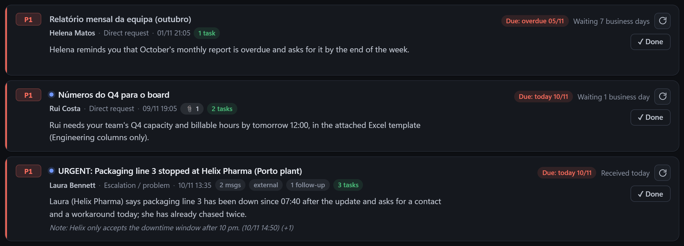
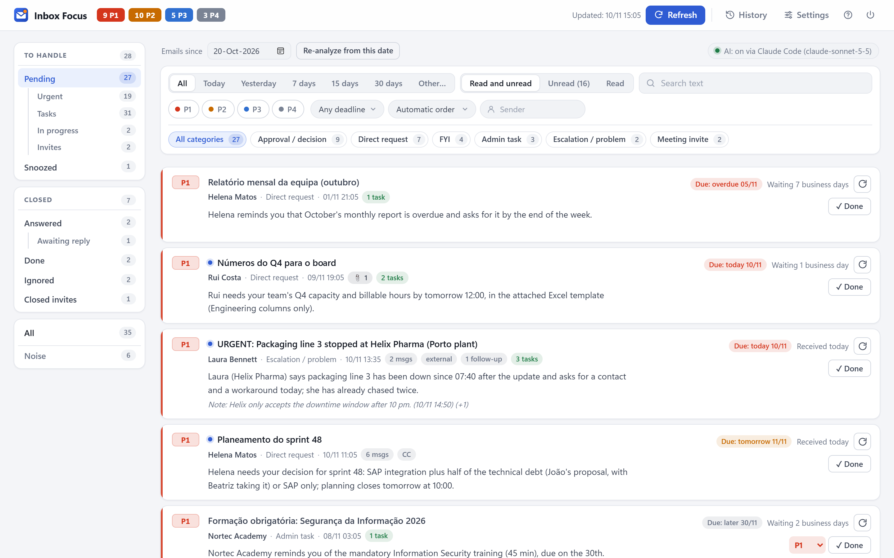
P1 to P4, always with the reason
The level comes from rules you can see and change in Settings (urgency words, VIP senders, important topics, internal domains). When you open an email, the "Why P1" box lists the reasons. Meeting invites follow the meeting date: today P1, tomorrow P2, this week P3, later P4; a calendar conflict raises one level. Noise always stays at P4.
- Transparent rules: escalation or problem, urgency words, deadline, external customer, high importance, follow-ups, business days waiting.
- VIP senders and important topics (e.g. performance review, 1:1) go up one level.
- The AI may adjust one level, and says why.
- Disagree? Change the level on the row; the app learns and suggests treating the sender as VIP or noise.
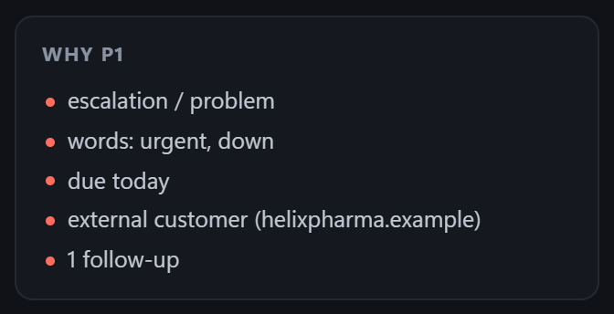
Find quickly what matters right now
Dates count the conversation's latest activity: email received, your reply or your change in the app. An old email you handle today shows in Today with a tag saying why (e.g. "done 03/11 12:07"). If the period is longer than the emails the app has read, a notice explains how to read more. For levels, with all visible, clicking P1 shows only P1; clicking others adds them; removing the last one shows all again.
- Dates: All, Today, Yesterday, 7, 15 and 30 days, or Other… with any number of days.
- "Only older" shows the opposite: what has been idle for more than those days.
- Read / Unread, P1–P4 (click one to show only that level), deadline, category, sender and text search.
- Automatic order or your choice (priority, date, deadline, waiting time...), with a second criterion to break ties.
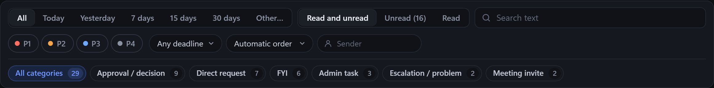
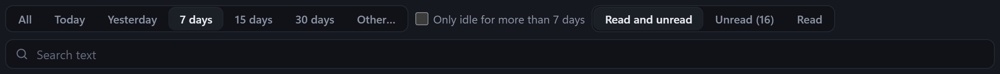
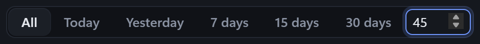
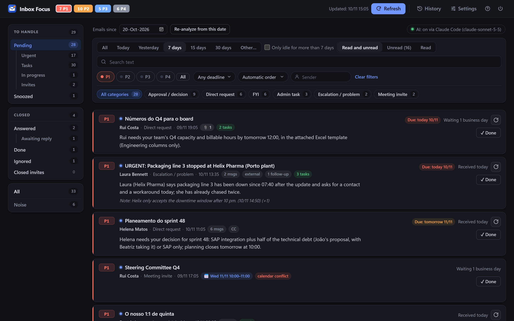
Everything in its place
The counters next to each view follow the chosen period and read filter. A conversation you replied to moves to Answered by itself, unless it is in progress (a task in progress, Claude's help requested or marked In progress): then it stays in In progress with the "Answered" tag until you press Done.
- Pending: what is waiting for you. Urgent: P1, P2 and deadlines today or overdue.
- Tasks: everything to do besides replying.
- In progress: what you already started. Awaiting reply: you asked for something and nobody answered.
- Invites, Snoozed, Answered, Done, Ignored and Noise, each on its own.
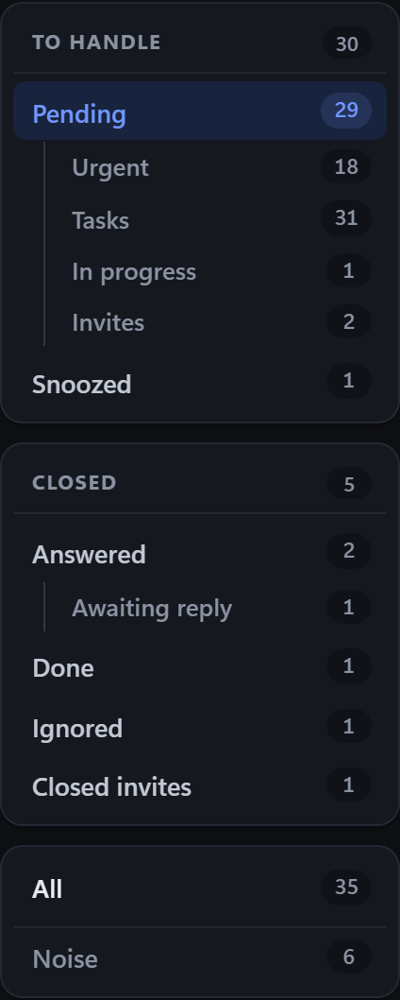
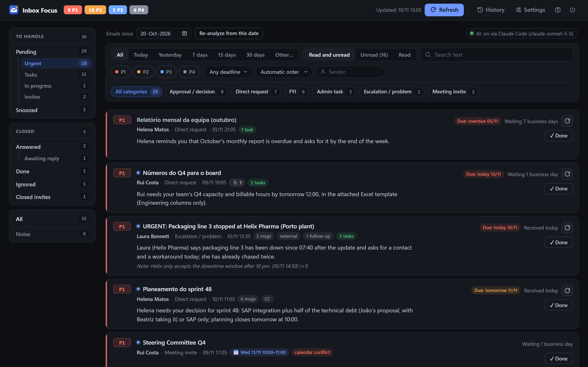
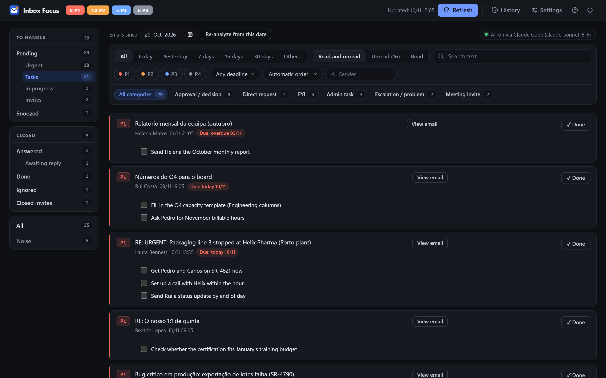
Everything you need to decide, on one screen
The summary and the reply consider the whole conversation, not just the last message: the AI always gets the first message, the middle ones as one line each and the most recent ones in full. The action bar is at the bottom (Done, Done and archive, Ignore, In progress, Read, level, Snooze and Spam).
- Summary of the whole conversation: what it is about, what was said and decided by whom, and what is left.
- The Conversation with every message; the one you are replying to is expanded.
- Attachments with type, name and size; they open in the usual program. The AI reads attachment text.
- Alongside: why this level, tasks, notes and Claude's help.
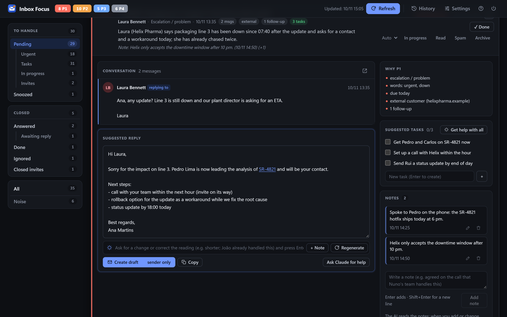
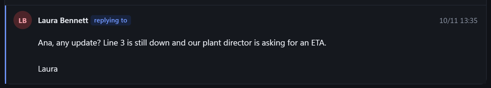
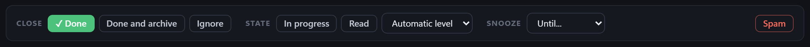
A suggested reply you adjust in seconds
Requests add up until you press Forget requests. Regenerate starts from the text in the box (with your edits). [[ ]] notes never go into the draft. Copy copies the reply with links and lists formatted, to paste anywhere.
- Written in the email's language, with your signature and no stock phrases.
- Edit freely, or ask for a change: "shorter", "João already handled this".
- To change one exact spot, write a note there between
[[ ]]: e.g.[[say I can only do Friday]]. - Create draft puts the reply in Outlook (reply all or sender only). You review and send.
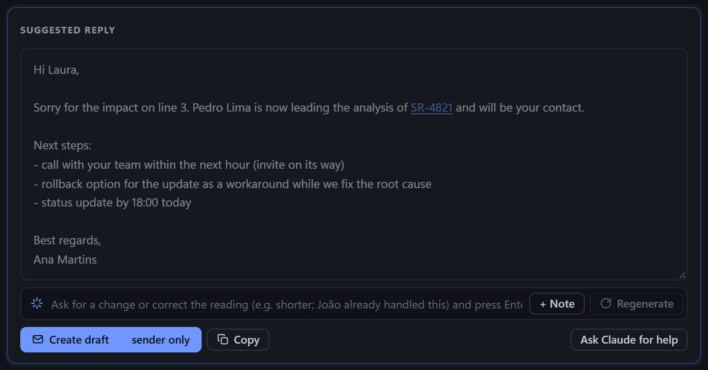
What there is to do, besides replying
Tasks you create carry the "yours" tag. To change a task's text, hover it and click ✎: Enter saves, Esc cancels, and the notice has Undo. An AI suggestion you edit becomes yours (the AI stops suggesting the original) and keeps its place; typing the original text back hands it back to the AI. Deleted and rejected ones stay under "N removed tasks", with Restore. Creating a task on a closed email puts it back in pending.
- The AI pulls the tasks out of the conversation; you add your own.
- Start (in progress) or mark as done; the reply is rewritten with your progress.
- Any task can be edited with ✎, keeping its state and its place in the list.
- A suggestion that does not fit is rejected with ✕ and does not come back.
- The Tasks view brings together the tasks of every email.
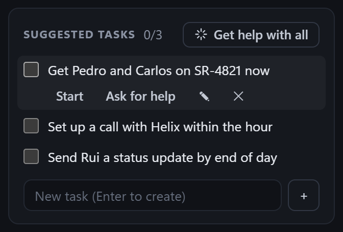
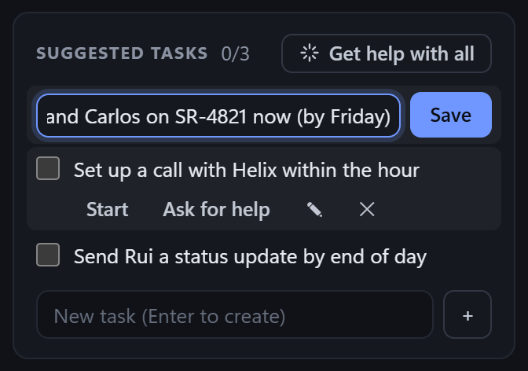
Delegate the legwork, one task or all of them
You can ask for help on one task (hover it and click Ask for help), on all open tasks (button in the Tasks header) or on the whole email (button under the reply). Before opening Cowork you can edit the request and remove lines. The result shows under "Cowork help", with Rewrite reply with this and Discard.
- Opens a Cowork task (Claude app) with the email and the request already filled in.
- "Get help with all" sends the tasks numbered; Claude handles one at a time.
- There, Claude uses your connections (Outlook, Teams...) and always asks before acting.
- The result comes back to the app and the suggested reply is rewritten with it.
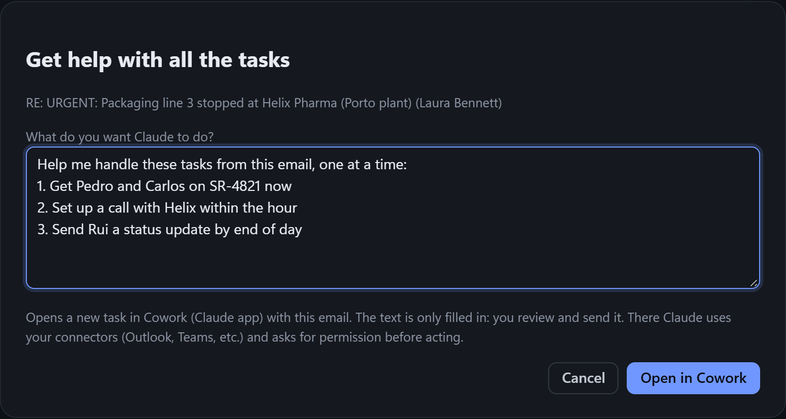
What only you know, the AI learns too
Type in the box and click Add note or press Enter (Shift+Enter for a new line). The pencil edits (Enter saves, Esc cancels) and the bin deletes, with Undo. The note from Done (in the archive dialog) joins the others.
- Several notes per email, each with a date; they stay in the app, never in Outlook.
- The AI reads them all (the latest wins) and redoes the summary, tasks and reply.
- Use them to fix a wrong reading: "agreed on the call, Nuno's team handles this".
- Edit and delete with Undo; the latest one shows on the email's row.
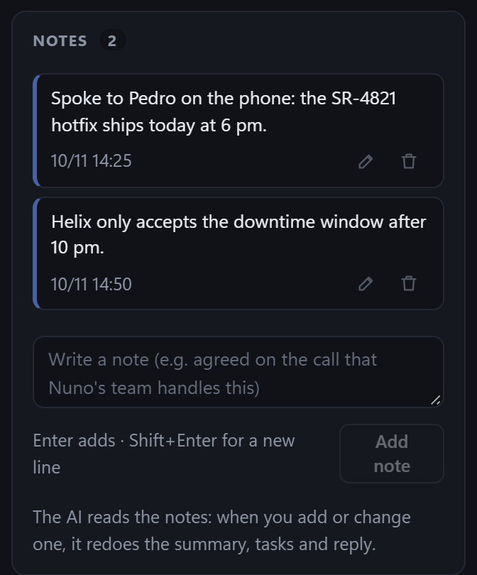
Nothing gets forgotten halfway
- In progress: started tasks, Claude's help requested, drafts created, or marked by hand.
- Awaiting reply: you asked for something and nobody answered; shows for how many business days.
- Create reminder prepares a follow-up draft from your last message.
- Snooze removes an email until a date; it comes back by itself, or earlier if a reply arrives.
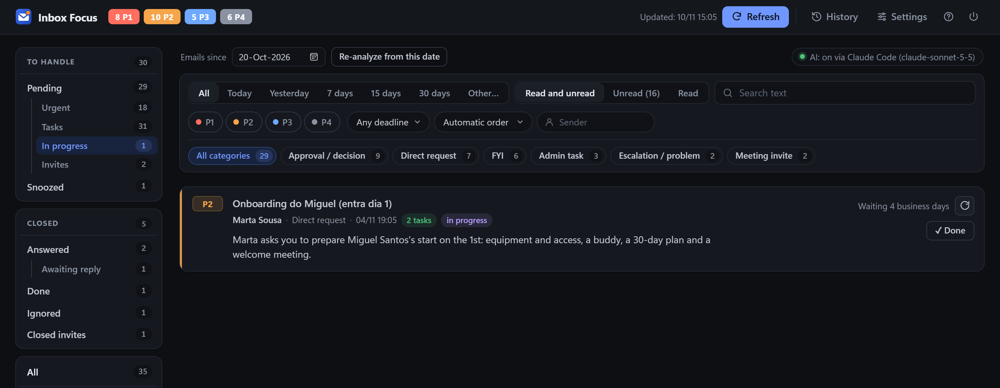
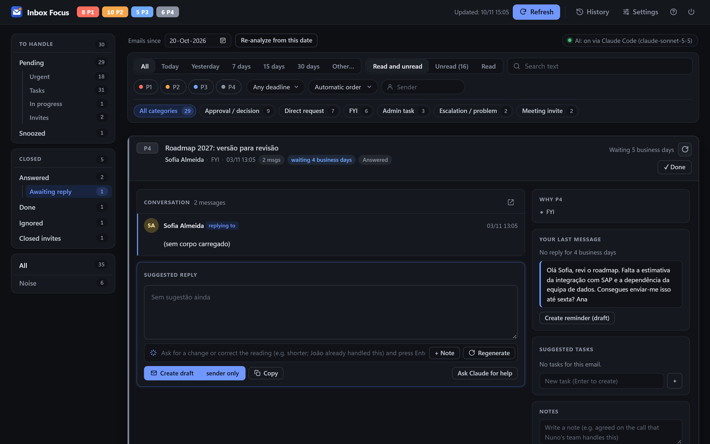
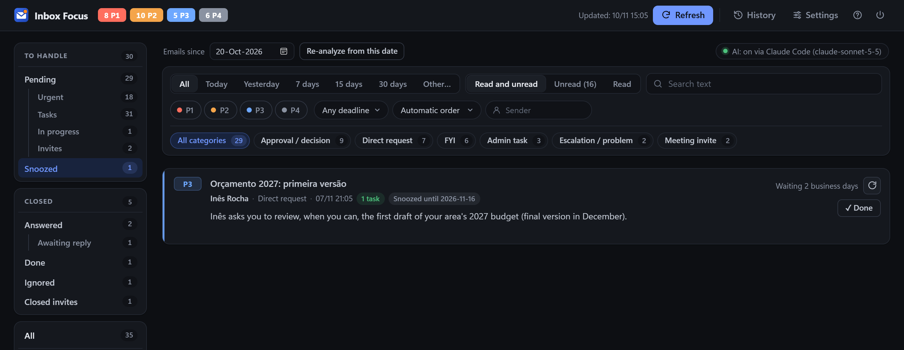
Meeting invites with your calendar in view
- Date, time, location and organizer, and a warning about calendar conflicts.
- Priority from the meeting date; a conflict raises one level.
- Accept, Tentative or Decline open the prepared response in Outlook; you send it.
- Tabs To answer, Answered and Past; cancellations go to Noise.
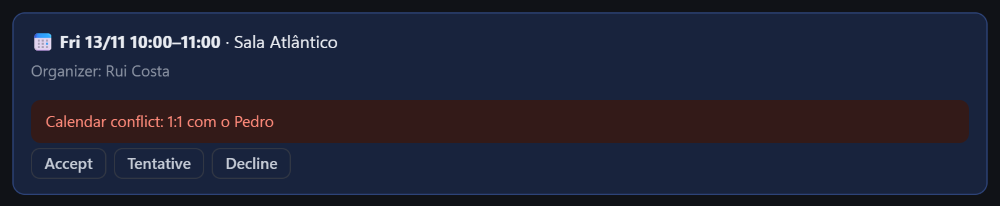
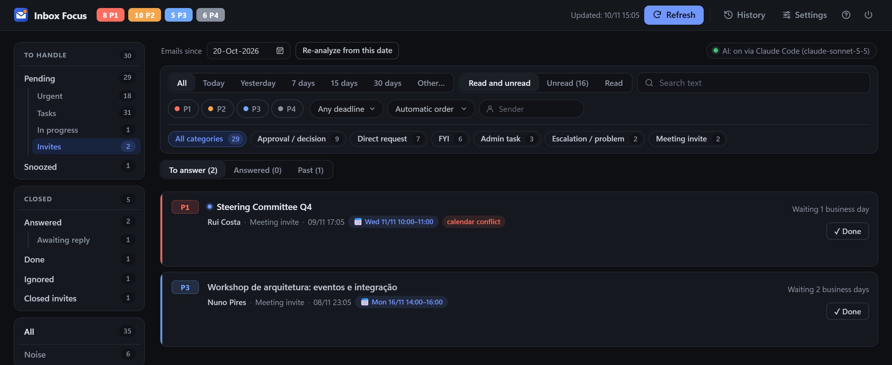
Clear it in one click, and the Inbox stays tidy
- Done closes the tasks and marks as read in Outlook.
- Done and archive moves the conversation to an Outlook folder; the app suggests the folder by sender and domain.
- Ignore removes it from the list without touching Outlook. Spam moves it to Junk.
- Everything can be Undone for 8 seconds, and later in History.
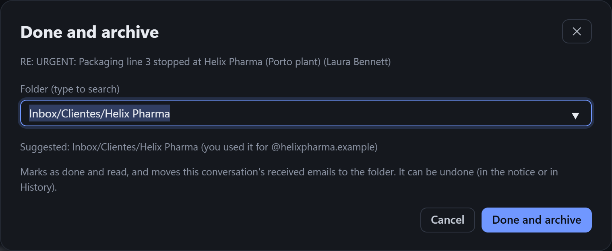
Newsletters and notifications out of the way
- Automatic senders, newsletters, auto-replies and emails with "unsubscribe" where you are not in To.
- Each one says why it is noise (e.g. noreply sender).
- Approval or access requests are never noise, even from a no-reply address.
- Not noise brings it back; the app learns the senders you ignore.
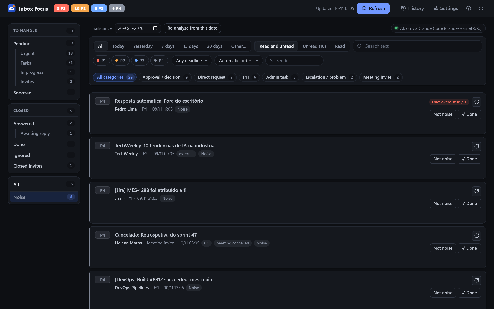
Made a mistake? Undo it, even days later
- All your changes, with Undo at any time.
- Restores the state in the app and, when possible, in Outlook: back to unread, back to the Inbox.
- In each conversation the most recent change is undone first.
- Keeps 30 days by default (change it in Settings).
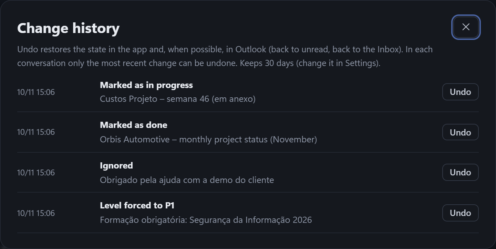
Tuned to you, without touching code
- Language (Portuguese or English): interface, summaries and tasks.
- Auto-refresh, notify of new P1, history days, new-version notice.
- VIP senders, important topics, senders to ignore, folders to exclude, urgency words.
- Automatic AI up to a level and only for recent days; the rest is generated when you open the email.
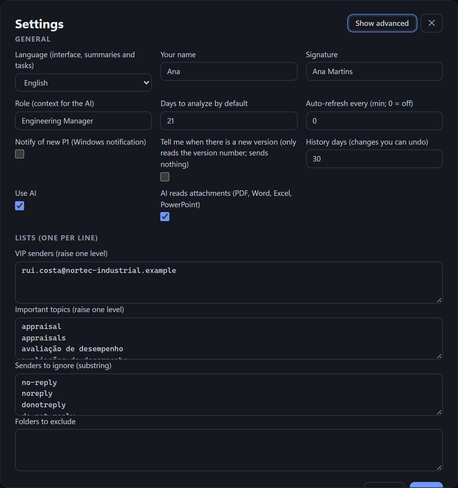
Keyboard shortcuts and light or dark theme
- j / k to move, Enter to open, e for Done, and more (press ?).
- Follows the Windows theme: light or dark.
- Your filters, order and period are remembered.
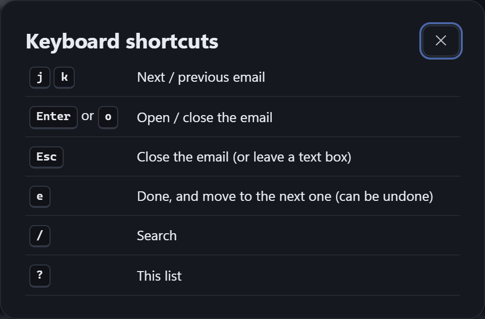
Built for work email
✓ Never sends
Replies stay as drafts in Outlook. You send them.
✓ Never deletes
Spam moves to Junk; everything can be undone.
✓ Stays on your PC
Data stays on the PC. Only the clean email text goes to the AI, and the AI can be turned off.
✓ Explains itself
Every level says why. The rules are in Settings, in plain sight.
✓ Asks before acting
Claude in Cowork asks for permission before sending or changing anything.
✓ No content in logs
The app's log files do not store email content.
Install, try it out and keep it up to date
Installing over the current version keeps your settings and data. On first use the app asks for your name, signature, role and from which day to read email. After that, day to day is just Refresh. If Windows shows the SmartScreen warning, choose More info > Run anyway.
- Needs Windows and classic Outlook (or the Graph connection to Microsoft 365).
- For the AI: Claude Code with the company account. Without it, the app works without summaries or replies.
- Demo version: fictional data, no Outlook needed. Good to try it out or show it.
- The app tells you when a new version is out, shows what changes and downloads the installer.
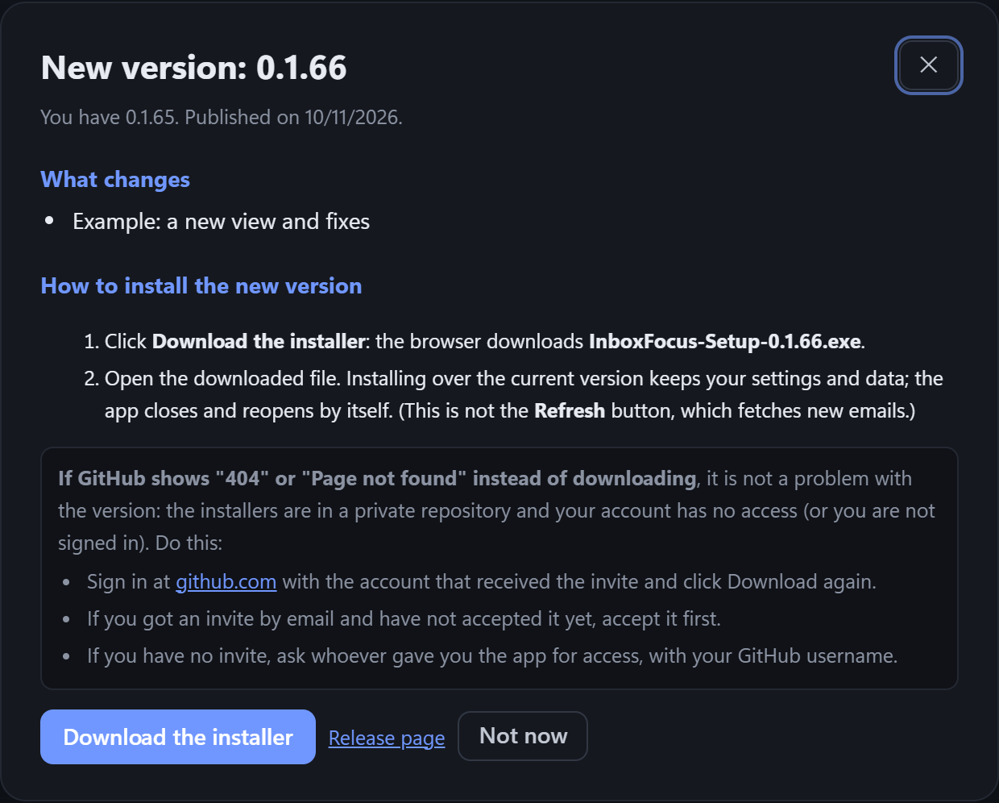
Frequently asked questions
Does the app send emails for me?
No. It creates drafts in Outlook; you review and send them.
Why did an email move to Answered?
Because the last message in the conversation is yours. If it is in progress (a task in progress, Claude's help or marked In progress), it stays in In progress until you press Done.
The AI misread the conversation. How do I fix it?
Write a note explaining it (e.g. "João already handled this"). The AI redoes the summary, tasks and reply with it. To change only the reply, use the request box under the reply.
I don't see an email I expected.
Check the period (All, Today, 7 days...), the Read / Unread filter, the P1–P4 levels and the view. It may also be in Noise: there, click Not noise.
It says "AI off" or "Claude Code not installed".
Click How to enable next to the "AI:" line and follow the steps. Having the Claude app is not enough: you need Claude Code signed in with the company account.
"Classic Outlook was not found".
The app needs classic Outlook. The "new Outlook" won't work; on IT-managed PCs, use the Graph connection.
Downloading the new version shows 404.
The installers are in a private repository. Sign in to GitHub with the invited account (and accept the invite) or ask whoever gave you the app for access.
Where is my data?
On your PC, in %LOCALAPPDATA%\InboxFocus. Installing a new version keeps it.